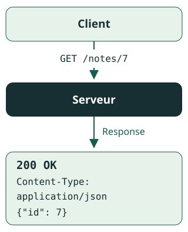

Cours
Introduction · Sections du cours
À la fin de ce cours
Le lecteur demande GET /blog/42. Notre catalogue contient l'article 42 :
une réponse 200 peut en transporter la représentation. Mais que répondre
pour /blog/999, une inscription réussie ou un import seulement accepté ?
Nous allons choisir le status code, nombre qui décrit le résultat HTTP, d'après le
résultat réel, puis distinguer les codes voisins sans leur prêter des effets
que l'application n'a pas exécutés.
Ce cours répond à une seule question : quel nombre dois-je mettre dans la Response pour que le client sache quoi faire ensuite ?
- Choisir un status code selon le résultat réel de l'opération.
- Distinguer refus, redirection et réutilisation d'une représentation.
- Associer 401 et 405 aux headers exigés.
- Exprimer ces choix avec
ResponseetRedirectResponse.
Prérequis intégrés : Request, Response, méthode, headers et body. Ils sont expliqués à l'étape 01, sans cours préalable à ouvrir.
01 · Un modèle simple, cinq familles
Ce que cette partie veut réellement vous apprendre.
- Pourquoi ce sujet existe. Un client HTTP (navigateur, cache, proxy, script d'API) ne lit pas votre body pour décider quoi faire : il lit d'abord le status code. C'est le seul endroit où le serveur dit, sous forme normalisée, « c'est réussi », « va voir ailleurs », « ta Request est fausse » ou « je suis tombé en panne ».
- Le piège de fond. Les codes voisins (
301/302/303/307/308,401/403,406/415,200/204) se ressemblent, mais déclenchent des comportements différents côté client. Les confondre est l'erreur classique de certification. - Ce que l'auteur veut que vous compreniez. Le code décrit un résultat
déjà établi ; il ne le produit pas. Écrire
HTTP_CREATEDne crée rien. - Pourquoi c'est à l'examen. Les questions portent sur le nom exact des
constantes
Response::HTTP_*, sur les headers obligatoires (Allow,WWW-Authenticate) et sur la frontière entre codes proches.
Le premier chiffre donne la famille du résultat : information, succès,
action supplémentaire, erreur liée à la Request ou échec du serveur.
Il n'attribue pas automatiquement une faute à une personne. Une 404
sur notre article absent n'est pas la même situation qu'une 500
provoquée par une panne inattendue du code.
Le nombre fait autorité : dans 200 OK en HTTP/1.1, le libellé est informatif ;
HTTP/2 et HTTP/3 n'utilisent pas cette phrase descriptive. Lis ensuite
le status code avec la méthode, les headers et le body, c'est-à-dire le contenu
du message. Un même succès ne transporte pas de body pour HEAD.
Pour voir pourquoi le choix précis compte, quittons momentanément la lecture
de l'article : le lecteur veut s'inscrire à la lettre du blog.
À comprendre Un client envoie une Request à une URL avec une méthode (GET pour lire, POST pour soumettre). Le serveur renvoie une Response : status code, headers et, quand c'est permis, body.
Au guichet, « demande reçue » ne signifie pas « document prêt ». HTTP distingue aussi l'acceptation d'un travail et son résultat. Le status code décrit le résultat de la Request, pas toute l'histoire métier.
Où en est-on ? Étape 1 : avant de préciser chaque réponse du blog, classons son résultat. Le premier chiffre est le tri le plus rapide.
RFC 9110 §15 définit cinq classes identifiées par le premier chiffre :
| Class | Sens | Exemple |
|---|---|---|
1xx |
Information — Request reçue, traitement continue | 100 Continue |
2xx |
Succès | 200 OK |
3xx |
Redirect — action supplémentaire requise | 301 Moved Permanently |
4xx |
Erreur liée à la Request, ou refus de la satisfaire | 404 Not Found |
5xx |
Échec du serveur à satisfaire la Request | 500 Internal Server Error |
Ainsi, la représentation de l'article 42 relève de 2xx, son absence de
4xx, et une indisponibilité du blog de 5xx. 3xx ne signifie pas
toujours « ouvrir une autre URL » : une 304 permettra de réutiliser une
copie après une Request conditionnelle. La famille oriente ; le code
précis et ses conditions terminent l'explication.
Pourquoi un client lit-il un code inconnu comme x00 ? Parce que le
protocole doit pouvoir évoluer : un vieux client qui voit un code nouveau
retombe sur la famille, donc sur un comportement prudent.
Si un client reçoit un code qu'il ne reconnaît pas, il le traite comme le
x00 de sa class : un 499 inconnu se lit comme une erreur 400.
Une Response portant un code inconnu ne doit pas être mise en cache.
Ce mécanisme de compatibilité n'invite pas à inventer des codes métier.
HttpFoundation accepte la plage numérique 100 à 599 ;
setStatusCode(600) lève une InvalidArgumentException, au lieu de
transformer le nombre en 500 ou 599.
setStatusCode($code)
│
├─ 100 ≤ code ≤ 599 ──► accepté (code inconnu : texte « unknown status »)
└─ sinon (ex. 600) ───► InvalidArgumentException (jamais ramené à 500 ni 599)Pourquoi la mauvaise réponse semble plausible : la règle « inconnu → x00 »
vaut pour le client qui lit ; elle ne dit pas que HttpFoundation corrige
lui-même un nombre hors plage.
À comprendre Avant de choisir : déterminer ce que la Request demande, ce qui s'est réellement passé et ce que le client doit faire ensuite. Vérifier alors les headers obligatoires et si un body est permis.

Dans HTTP/1.1, le nombre de 200 OK fait autorité ; le libellé est informatif. HTTP/2 et HTTP/3 n'utilisent pas cette phrase descriptive.
🌍 In Real Life
La situation : pour une réservation, l'accueil peut faire patienter, confirmer, orienter vers une autre fiche, refuser la demande ou annoncer un incident. Il faut écouter le message précis, pas seulement son ton.
L’équivalent dans Symfony : - Avis intermédiaire « vous pouvez continuer » → exemple de la famille 1xx. - « Demande acceptée » ou « réservation créée », selon le résultat réel → famille 2xx. - « Consultez cette autre fiche » ou « gardez votre copie » → exemples de la famille 3xx. - Formulaire problématique ou demande refusée → famille 4xx. - Incident empêchant le service de répondre à la demande → famille 5xx.
Retour à la réalité technique : le premier chiffre classe le résultat ; le code précis, la méthode et les headers en fixent le sens. Ces familles ne sont pas cinq étapes successives de GET /blog/42. HttpFoundation représente le status code sans accomplir l'opération annoncée ; le libellé HTTP/1.1 n'est pas la règle.
🧠 Comment le mémoriser : « Classer, puis préciser. » Image mentale : cinq cases à l'accueil, chacune contenant des réponses différentes. Question-réflexe : que signifie ce code exact pour cette méthode ?
⚠️ À ne pas confondre : 3xx et changement obligatoire d'adresse ; 4xx et culpabilité d'une personne ; avis 1xx et acceptation 202.
À retenir, dans cet ordre : la famille donne un repère, pas une décision complète.
- Lire le status code précis dans son contexte.
- Vérifier ensuite les headers et la présence autorisée d'un body.
02 · 401 ou 403 : quel refus ?
Repère préalable : les éléments d'une Response.
- À comprendre
401Unauthorized - Des identifiants d'authentication valides manquent pour cette ressource. La Response doit contenir au moins un challenge dans le header WWW-Authenticate. Le nom « Unauthorized » ne désigne pas un simple manque de droits.
- Piège à éviter
403Forbidden Comprendre : 403 Forbidden
Le serveur comprend la Request mais refuse de la satisfaire. Des droits insuffisants pour un utilisateur authentifié en sont un exemple ; 403 ne prouve pas que le client est authentifié. Répéter avec les mêmes identifiants ne résout pas ce refus.
Nuance à connaître Distinction minimale : l'authentication vérifie l'identité ; l'authorization décide ce qui est permis. Dans une application avec form login, l'entrée dans le parcours d'authentication peut produire une redirection vers la connexion, pas toujours 401. On ne déduit donc pas le status code final du seul nom d'une exception ou du firewall.
🌍 In Real Life
La situation : à l'entrée d'un espace réservé du restaurant, l'accueil peut demander un justificatif valable en indiquant le moyen de le présenter, ou refuser l'accès sans avoir établi l'identité.
L’équivalent dans Symfony :
- Justificatif valable manquant et moyen de s'identifier annoncé → 401 avec au moins un challenge WWW-Authenticate.
- Demande comprise mais refusée → 403, sans preuve que l'identité a été vérifiée.
Retour à la réalité technique : l'authentification établit l'identité ; l'autorisation décide du droit. Des droits insuffisants pour un utilisateur connu ne sont qu'un cas de 403. Avec une entrée Security de type form login, une redirection vers la connexion peut remplacer le 401 attendu : la configuration du parcours compte.
🧠 Comment le mémoriser : « Demander une identité n'est pas accorder un droit. » Image mentale : justificatif demandé d'un côté, accès refusé de l'autre. Question-réflexe : ce status code exige-t-il un challenge ou annonce-t-il un refus ?
⚠️ À ne pas confondre : le nom Unauthorized de 401 et un simple manque de permission ; 403 et identité nécessairement connue.
RFC 9110 §15.5.2 — 401 · §15.5.4 — 403 · Symfony 8.0 — Authentication entry point.
À retenir : un refus HTTP ne suffit pas à reconstituer tout le parcours d'authentication.
- 401 : absence d'identifiants valides et challenge obligatoire.
- 403 : refus, sans preuve d'identité.
- Form login : une redirection peut amorcer l'authentication.
03 · Conserver l'opération ou lire ailleurs ?
À comprendre Pour les redirections suivantes, Location indique la destination. Le premier choix porte sur l'intention, le second sur la durée du déplacement.
307temporaire ·308permanent- Lors du suivi automatique, méthode et body sont conservés : un POST avec un body JSON reste un POST avec ce body. Cette garantie ne promet pas que l'opération cible réussira.
303See Other- Oriente vers une récupération par GET ou HEAD, pas vers la répétition de l'opération initiale. Après POST, le parcours usuel est POST → 303 → GET de la confirmation : actualiser cette page ne rejoue pas le POST.
- Piège à éviter
301permanent ·302temporaire Comprendre : 301 permanent · 302 temporaire
Pour des raisons historiques, le client peut transformer POST en GET lors du suivi. Ce n'est ni obligatoire, ni une garantie de conservation du body.
🌍 In Real Life
La situation : le restaurant déplace son point de réception des formulaires d'inscription. Le client doit remettre le même formulaire au nouveau poste, pas simplement aller y lire une affiche.
L’équivalent dans Symfony :
- Nouveau poste indiqué → header Location.
- Même opération et même formulaire lors du suivi automatique → méthode et body préservés par 307 ou 308.
- Déplacement provisoire ou permanent → 307 ou 308 respectivement.
Retour à la réalité technique : avec 301/302, un client peut transformer POST en GET ; ce n'est pas obligatoire, mais la conservation n'est pas garantie. Si l'inscription est déjà terminée et qu'on propose de consulter sa confirmation, 303 répond à cet autre besoin. La destination doit encore pouvoir traiter la demande.
🧠 Comment le mémoriser : « Garder l'opération, puis qualifier le déplacement. » Image mentale : formulaire inchangé devant une nouvelle adresse. Question-réflexe : le prochain appel doit-il encore être un POST avec ce body ?
⚠️ À ne pas confondre : déplacement permanent et cache éternel ; conservation de la demande et réussite garantie à destination.
Où en est-on ? Le cours suit un fil : choisir le code d'après le
résultat réel. On a vu que le code décrit un résultat ; voici le cas le plus
piégeux, celui de la redirection après un POST.
Le serveur vient de traiter POST /inscription. Souhaitons-nous afficher
une confirmation, ou transmettre la même opération à une nouvelle adresse ?
Ces intentions produisent des Requests suivantes différentes. Le diagramme
sépare cette décision de la permanence du déplacement.
Après un POST, une redirection 303 propose une lecture GET ou HEAD à une autre URI. Pour conserver méthode et contenu lors d'une redirection automatique, choisir 307 temporaire ou 308 permanente. Avec 301 ou 302, le client peut transformer POST en GET.
Bleu : POST request reçue ; orange : décision du server ; vert : status code choisi.
Exemple : le POST d'inscription réussit, puis un 303 mène à sa page de confirmation
sans proposer un nouveau POST. Ce dessin ne couvre pas tous les 3xx :
304 valide une copie en cache, sans redirection vers une autre URL.
Même idée en vue « ce que fait le client après » :
POST /inscription ──► Location: /confirmation
303 → le client fait GET /confirmation (lire ailleurs)
307 → le client refait POST <nouvelle URL> (refaire ailleurs, temporaire)
308 → le client refait POST <nouvelle URL> (refaire ailleurs, définitif)
301/302 → POST ou GET : le client PEUT changer (historique, non garanti)RFC 9110 §15.4 — Redirections.
À retenir : choisir selon l'opération à poursuivre, avant de regarder la permanence.
- Conserver méthode et body : 307 ou 308.
- Récupérer ailleurs : 303, par GET ou HEAD.
- 301/302 : ne pas supposer que POST sera conservé.
04 · 204 et 304 : pas de body, pas le même sens
Où en est-on ? Étape 2 : les familles sont claires ; voici les codes à reconnaître, avec le nom exact de leur constante Symfony. Pour les utiliser, rattache d'abord le résultat à une scène : consulter l'article, créer une ressource, refuser une méthode ou déplacer une opération.
| Code | Constant | À retenir |
|---|---|---|
201, 204 |
HTTP_CREATED, HTTP_NO_CONTENT |
204 interdit tout body |
301, 302, 303, 304 |
HTTP_MOVED_PERMANENTLY, HTTP_FOUND, HTTP_SEE_OTHER, HTTP_NOT_MODIFIED |
|
307, 308 |
HTTP_TEMPORARY_REDIRECT, HTTP_PERMANENTLY_REDIRECT |
method et body gardés |
401, 403, 404 |
HTTP_UNAUTHORIZED, HTTP_FORBIDDEN, HTTP_NOT_FOUND |
401 exige WWW-Authenticate |
405, 406, 415, 422 |
HTTP_METHOD_NOT_ALLOWED, HTTP_NOT_ACCEPTABLE, HTTP_UNSUPPORTED_MEDIA_TYPE, HTTP_UNPROCESSABLE_ENTITY |
405 exige Allow |
Pour GET /blog/42, 200 annonce le succès et transporte la représentation ;
pour HEAD, il n'y a pas de body. 201 annonce une ou plusieurs ressources
effectivement créées. Location, s'il est fourni, identifie la ressource
principale ; sinon c'est l'URI cible. Un body peut décrire le résultat.
Si l'application accepte un import sans l'avoir terminé, 202 décrit cette
acceptation, pas son achèvement ni une garantie de succès. Une URL et un
état de suivi aident le client. Si le contrat annonce plutôt la création
effective d'une ressource de suivi, 201 peut convenir : cela ne signifie
toujours pas que l'import est fini.
Pour /blog/999, 404 signifie qu'aucune représentation actuelle n'a été
trouvée, ou que son existence n'est pas révélée. Cela ne garantit pas une
disparition permanente. 404 est heuristically cacheable (§15.1) :
un cache peut lui attribuer une durée de fraîcheur heuristique lorsque les
autres conditions de cache le permettent. C'est aussi le cas de 405,
410, 414 et 501 ; « une erreur n'est jamais mise en cache » est donc
un mauvais réflexe.
Affinons les refus autour de l'article et de son édition :
- Une méthode connue mais non permise sur cette ressource appelle
405, avec le header obligatoireAllowlistant les méthodes actuellement acceptées. Un refus de DELETE sur une ressource de lecture n'est pas une erreur de format de contenu. 400couvre une erreur client perçue empêchant ou faisant refuser le traitement ; cette catégorie n'est pas limitée à une syntaxe JSON invalide.- Une modification incompatible avec l'état courant de l'article peut
produire
409. Décrire le conflit aide le client à le résoudre. 422suppose un type compris et une syntaxe correcte, mais des instructions impossibles à traiter, par exemple une date de fin avant la date de début. Ce n'est pas le status code obligatoire de toute validation échouée : le contrat d'API et le mécanisme Symfony utilisé comptent, et400peut convenir. Le nom moderne est Unprocessable Content, mais la constante Symfony resteHTTP_UNPROCESSABLE_ENTITY.
Enfin, si la lecture échoue côté serveur, distingue le lieu de la panne.
500 signale une condition inattendue, pas le résultat normal d'une saisie
invalide. Un intermédiaire qui reçoit une réponse amont invalide utilise
502 ; s'il n'obtient pas la réponse à temps, 504. Pour une maintenance
ou surcharge généralement temporaire du blog, 503 convient ;
Retry-After peut préciser une date HTTP ou un délai en secondes, sans
être obligatoire. Ces situations ne prouvent pas que le controller a
été appelé : un intermédiaire peut répondre avant lui.
Résumé « quel problème, quel code » :
Résultat Code Header à connaître
───────────────────────────────────────── ────── ──────────────────────
Représentation renvoyée 200 (HEAD : pas de body)
Ressource effectivement créée 201 Location (si fournie)
Demande acceptée, pas terminée 202 (URL de suivi utile)
Succès, rien à renvoyer 204 AUCUN body
Ressource absente / non révélée 404 (cacheable heuristiquement)
Méthode connue mais non permise 405 Allow (obligatoire)
Conflit avec l'état courant 409 décrire le conflit
Panne inattendue du serveur 500 —
Amont invalide / amont trop lent 502/504 —
Maintenance ou surcharge temporaire 503 Retry-After (facultatif)🌍 In Real Life
La situation : l'accueil distingue « dossier créé », « demande acceptée pour traitement » et « opération terminée sans document à remettre ».
L’équivalent dans Symfony : création effective → 201 ; acceptation non achevée → 202 ; succès sans contenu → 204.
Retour à la réalité technique : le status code décrit un résultat établi ; choisir une constante ne crée ni ressource ni tâche asynchrone. 204 interdit un body. Une panne inattendue, un refus et une absence connue demandent des diagnostics différents.
🧠 Comment le mémoriser : « Annoncer ce qui a réellement eu lieu. » Image mentale : trois tampons sur trois dossiers distincts. Question-réflexe : qu'est-ce qui est créé, accepté ou terminé ?
⚠️ À ne pas confondre : 202 et garantie de succès futur ; famille d'erreur et culpabilité d'une personne.
À comprendre 204 No Content : l'opération a réussi, sans body à renvoyer. Des headers restent possibles, mais pas de JSON, même {}.
Comprendre : 304 Not Modified
Piège à éviter 304 Not Modified : pour un GET ou HEAD conditionnel, le client peut réutiliser sa représentation. Par exemple, If-None-Match: "note-v2" correspond à l'ETag actuel : le client garde sa représentation et actualise ses métadonnées avec les headers reçus. 304 n'a pas de body et n'est pas une redirection avec Location. Ce n'est pas non plus un succès de modification. Comparer à 204 et aux déplacements avec Location.
🌍 In Real Life
La situation : le client conserve une copie du menu et demande si son édition est toujours utilisable. L'accueil peut confirmer cette copie sans lui remettre à nouveau le document.
L’équivalent dans Symfony :
- Menu déjà conservé → représentation stockée de l'article.
- Référence de l'édition présentée pour comparaison → ETag envoyé dans le header conditionnel If-None-Match.
- Copie réutilisable après vérification → réponse 304 sans body, avec les métadonnées applicables.
Retour à la réalité technique : 304 répond à un GET ou HEAD conditionnel lorsque ses conditions sont satisfaites ; ce n'est pas « toute opération qui ne change rien ». Le code applicatif ou l'infrastructure doit effectuer le traitement conditionnel : écrire un ETag ne le réalise pas seul. L'image porte sur un document copiable, pas sur un plat resservi.
🧠 Comment le mémoriser : « Confirmer la copie, pas répéter le contenu. » Image mentale : menu conservé et référence comparée. Question-réflexe : valide-t-on une représentation existante ou annonce-t-on une opération réussie ?
⚠️ À ne pas confondre : 304 et 204, tous deux sans body mais de sens différent ; 304 et navigation vers Location.
200OK- La Request a réussi. Le body dépend de la méthode : représentation pour GET, résultat du traitement pour POST. HEAD ne renvoie pas de body, même avec 200.
201Created- Une ou plusieurs ressources ont été créées.
Location, s'il est fourni, identifie la ressource principale ; sinon, c'est l'URI cible. Un body peut décrire le résultat. 202Accepted- Le traitement est accepté, mais pas terminé et pas garanti. Un état et une URL de suivi aident le client ; ne pas annoncer un fichier déjà créé pour un export seulement mis en attente.
Exemple concret Pour un export seulement mis en attente, annoncer le travail par 202, avec un état et une URL de suivi dans le body. Si le contrat annonce plutôt la création effective d'une ressource de suivi, 201 peut convenir : ce n'est pas affirmer que le fichier est prêt. Lire ensuite le résultat disponible avec GET appelle 200 et sa représentation JSON, pas 204.
RFC 9110 §15.3 — Succès · §15.4.5 — 304. La politique de cache complète reste planifiée.
À retenir : séparer résultat métier et représentation transportée.
- 204 : succès sans body ; 304 : réutilisation sans body.
- 200 : succès selon la méthode ; 201 : création effective.
- 202 : acceptation, ni achèvement ni garantie.
05 · 406 ou 415 : sortie ou entrée ?
406Not Acceptable- Aucune représentation de sortie ne respecte la négociation du client et le serveur ne souhaite pas proposer de représentation par défaut. Exemple :
Accept: application/xmlface à une API proposant seulement JSON. 415Unsupported Media Type- Le body envoyé utilise un format non pris en charge pour cette méthode et cette ressource. Cela peut concerner le type de média, le codage du contenu ou les données elles-mêmes.
🌍 In Real Life
La situation : le restaurant peut refuser un formulaire reçu dans un format qu'il ne traite pas. Autre problème : le client demande un menu dans une présentation que le restaurant ne propose pas.
L’équivalent dans Symfony :
- Format du formulaire entrant non pris en charge → 415.
- Aucune présentation de sortie acceptable, sans choix de repli du serveur → 406.
- Présentation souhaitée → Accept ; format du document porté par un message → son Content-Type.
Retour à la réalité technique : 415 peut concerner le type de média, le codage du contenu ou les données inspectées. Une préférence de sortie non satisfaite n'impose pas toujours 406 : le serveur peut choisir de l'ignorer et annoncer correctement la représentation envoyée. Lire les headers dans une Request Symfony n'applique pas automatiquement cette politique.
🧠 Comment le mémoriser : « Le format entre ou sort ? » Image mentale : formulaire entrant à gauche, menu retourné à droite. Question-réflexe : quel message porte le problème ?
⚠️ À ne pas confondre : format entrant non pris en charge et instructions impossibles dans un format compris, cas distinct de 422.
RFC 9110 §15.5.7 — 406 · §15.5.16 — 415.
À retenir : les deux status codes concernent des directions différentes.
- 415 : examiner le body reçu et son format.
- 406 : examiner les préférences de sortie et les représentations disponibles.
06 · Affiner les autres refus
- À comprendre
405Method Not Allowed - La méthode est connue mais non prise en charge par la ressource cible. Le header Allow est obligatoire : il liste les méthodes actuellement permises, par exemple
Allow: GET, HEAD. - Nuance à connaître
400Bad Request - Erreur client perçue empêchant ou faisant refuser le traitement : syntaxe malformée, cadrage invalide, etc. Cette catégorie est large, pas limitée à la syntaxe ou au JSON invalide.
404Not Found- Aucune représentation actuelle trouvée, ou refus de révéler son existence. Ce status code ne garantit pas une disparition permanente.
409Conflict- Conflit avec l'état actuel de la ressource : par exemple, réserver une place déjà attribuée. Décrire le conflit aide le client à le résoudre.
422Unprocessable Content- Le type de contenu est compris et la syntaxe correcte, mais les instructions ne peuvent être traitées : par exemple, une date de fin antérieure à la date de début. 422 n'est pas obligatoire pour toute erreur de validation : 400 peut convenir selon le contrat d'API et le contexte. Symfony ne renvoie pas automatiquement 422 pour toute validation en échec ; le mécanisme utilisé et sa configuration comptent.
🌍 In Real Life
La situation : le poste de réservation du restaurant refuse plusieurs demandes, mais pas pour la même raison.
L’équivalent dans Symfony :
- Demande mal structurée → exemple de 400, catégorie plus large que ce seul cas.
- Fiche introuvable ou dont l'existence n'est pas révélée → 404.
- Opération connue mais non permise sur cette fiche → 405, avec Allow listant les méthodes permises.
- Place déjà attribuée, en conflit avec la réservation demandée → 409.
- Formulaire de format compris et de syntaxe correcte, mais fin antérieure au début → exemple d'instructions non traitables, 422.
Retour à la réalité technique : l'analogie aide à qualifier le refus ; elle n'est pas un moteur de choix automatique. Symfony ne transforme pas toute validation échouée en 422 : le mécanisme utilisé, sa configuration et le contrat d'API comptent. Une 404 ne garantit pas une disparition permanente.
🧠 Comment le mémoriser : « Nommer la cause avant le code. » Image mentale : cinq demandes refusées, chacune accompagnée de sa raison. Question-réflexe : manque-t-il une ressource, une méthode permise, un état compatible ou des instructions traitables ?
⚠️ À ne pas confondre : méthode permise par la ressource et droit personnel de l'utilisateur ; 405 et 403 ne répondent pas à la même question.
RFC 9110 §15.5 — Erreurs client.
À retenir : qualifier la cause plutôt que recycler un status code générique.
- 405 : méthode non permise, avec Allow.
- 400 : catégorie large ; 422 : instructions non traitables malgré un format compris, pas une obligation pour toute validation.
- 404 : non trouvé ou non révélé ; 409 : conflit d'état.
07 · Situer l'échec côté serveur
500Internal Server Error- Une condition inattendue empêche le serveur de satisfaire la Request. Ce n'est pas le status code par défaut d'une erreur de validation du client.
502Bad Gateway- Un intermédiaire (gateway ou proxy) reçoit une Response invalide d'un serveur amont.
503Service Unavailable- Indisponibilité généralement temporaire : surcharge ou maintenance.
Retry-Afterpeut indiquer quand réessayer (date HTTP ou délai en secondes) ; il n'est pas obligatoire. 504Gateway Timeout- Un intermédiaire ne reçoit pas à temps la Response amont nécessaire au traitement. Contrairement à 502, le problème est le délai.
🌍 In Real Life
La situation : le service du restaurant peut subir un incident interne ou être temporairement indisponible. Lorsqu'un accueil relaie la demande vers un autre service, il peut aussi recevoir une réponse inutilisable ou attendre trop longtemps.
L’équivalent dans Symfony : - Condition interne inattendue → 500. - Réponse amont invalide reçue par un intermédiaire → 502. - Service indisponible, par exemple en maintenance ou surchargé → 503. - Réponse amont nécessaire non reçue à temps par un intermédiaire → 504.
Retour à la réalité technique : 502/504 décrivent un rôle de gateway ou proxy, pas automatiquement toute panne d'une dépendance applicative. L'intermédiaire peut répondre avant que le controller Symfony soit appelé. Avec 503, Retry-After est facultatif et indique quand réessayer ; il ne garantit pas le rétablissement.
🧠 Comment le mémoriser : « Localiser avant de qualifier. » Image mentale : accueil relais devant le service amont, avec réponse invalide ou attente dépassée. Question-réflexe : qui répond, et qu'a-t-il reçu de l'amont ?
⚠️ À ne pas confondre : réponse amont invalide et délai dépassé ; échec serveur et refus normal d'une saisie invalide.
RFC 9110 §15.6 — Erreurs serveur.
À retenir : localiser l'échec avant de choisir son nom.
- 500 : condition inattendue sur le serveur.
- 502/504 : Response amont invalide / trop tardive.
- 503 : indisponibilité, éventuellement accompagnée de Retry-After.
08 · Traduire l'intention avec Symfony 8.0
Où en est-on ? On sait quel code choisir ; reste à l'écrire dans Symfony.
Plutôt que des « nombres magiques », Response expose des constantes
HTTP_*.
Dans une action Symfony 8.0, les constantes de Response rendent ce choix
lisible. Ces deux retours sont des alternatives, pas deux instructions
à exécuter successivement : le premier terminerait déjà l'action.
use Symfony\Component\HttpFoundation\Response;
return new Response('', Response::HTTP_NO_CONTENT); // 204
return new Response('', Response::HTTP_PERMANENTLY_REDIRECT); // 308 — pas HTTP_PERMANENT_REDIRECTLe premier construit un object portant le status code 204 sans contenu, par exemple
après une suppression effectivement réussie. Le second montre le nom exact
de la constante 308, mais ne définit aucune destination : ce n'est pas
encore une redirection utilisable. RedirectResponse, illustrée plus bas,
reçoit l'URL cible et fournit Location. Aucun de ces retours ne supprime
ni ne déplace une ressource à lui seul, et construire la Response n'est
pas l'envoyer sur le réseau.
Ce que Symfony voit : un int $status (second argument de Response), rien
de plus. La constante n'est qu'un nom lisible pour ce nombre.
Prérequis : création et acceptation, préservation ou récupération. Cette étape les traduit en PHP sans les réexpliquer.
Le constructeur de Response reçoit le body, le status code et les headers. Les constantes rendent l'intention lisible, mais HTTP_CREATED (201) ne crée rien à lui seul. JsonResponse encode les données en JSON ; son deuxième argument fixe le status code (notamment HTTP_ACCEPTED pour 202 ou HTTP_OK pour 200), le troisième fixe les headers. Ces classes illustrent des actions de controller indépendantes ; le routing et les opérations métier ne sont pas inclus.
Exemple concret Après création effective d'une note :
use Symfony\Component\HttpFoundation\JsonResponse;
use Symfony\Component\HttpFoundation\Response;
final class CreateNoteController
{
public function __invoke(): JsonResponse
{
// The note has already been created.
return new JsonResponse(
['id' => 7],
Response::HTTP_CREATED,
['Location' => '/notes/7'],
);
}
} Exemple concret RedirectResponse reçoit l'URL cible puis le status code ; il fournit Location. HTTP_TEMPORARY_REDIRECT vaut 307 ; pour le déplacement permanent ci-dessous, HTTP_PERMANENTLY_REDIRECT vaut 308.
use Symfony\Component\HttpFoundation\RedirectResponse;
use Symfony\Component\HttpFoundation\Response;
final class MoveIntakeController
{
public function __invoke(): RedirectResponse
{
return new RedirectResponse(
'/intake-v2',
Response::HTTP_PERMANENTLY_REDIRECT,
);
}
}Pour lire une confirmation ailleurs après POST, employer Response::HTTP_SEE_OTHER (303) avec RedirectResponse. Après une suppression sans document à retourner, new Response('', Response::HTTP_NO_CONTENT) exprime 204.
Nuance à connaître HTTP_UNPROCESSABLE_ENTITY vaut 422, malgré le libellé moderne « Unprocessable Content ». Revoir les conditions de 422 plutôt que déduire la règle du nom historique.
🌍 In Real Life
La situation : le restaurant prépare un avis décrivant une réservation déjà créée, puis le remet au service chargé de le transmettre. Imprimer « créée » ne réserve aucune table.
L’équivalent dans Symfony :
- Avis préparé avec texte, résultat et indications → Response : contenu, status code, headers.
- Avis rempli à partir de données structurées → JsonResponse les encode en JSON ; avis indiquant une autre adresse → RedirectResponse et Location.
- Avis remis au service → Response retournée par le controller, pas encore envoyée par cet acte.
Retour à la réalité technique : en Symfony 8.0, les constantes HTTP_* nomment des nombres, pas des opérations métier. JsonResponse encode les données ; un tableau brut n'est pas automatiquement du JSON pour HttpKernel. Dans le chemin Runtime HTTP standard, le runner émet la Response après le retour de handle(). Construire ou retourner cet objet ne prouve aucune livraison.
🧠 Comment le mémoriser : « Décrire, retourner, puis émettre. » Image mentale : avis prêt encore sur le comptoir. Question-réflexe : l'opération est-elle faite, et qui transmet la réponse ?
⚠️ À ne pas confondre : status code 201 et création effective ; Location préparé et destination déjà exécutée.
Documentation officielle HttpFoundation 8.0 — Response · RedirectResponse.
À retenir : le code PHP exprime une décision HTTP déjà comprise.
- Effectuer l'opération métier avant d'en annoncer le résultat.
- Utiliser RedirectResponse avec une destination pour une redirection.
- Response::HTTP_PERMANENTLY_REDIRECT = 308 ; Response::HTTP_UNPROCESSABLE_ENTITY = 422 (Unprocessable Content).
09 · Des raccourcis à éviter
Où en est-on ? Étape 3 : les codes sont posés. Voici les paires proches sur lesquelles les QCM piègent, chacune avec la raison pour laquelle la mauvaise réponse paraît plausible.
401 vs 403. Le lecteur veut maintenant accéder à une action protégée
du blog. L'authentication établit son identité ; l'authorization
décide ce qui lui est permis. 401 Unauthorized indique que des identifiants
valides manquent et exige au moins un challenge dans WWW-Authenticate.
Son nom ne désigne donc pas simplement un manque de droits.
403 Forbidden signifie que le serveur comprend mais refuse la Request ;
il ne prouve pas que le client est authentifié. Des droits insuffisants
pour un utilisateur identifié ne sont qu'un exemple. Répéter les mêmes
identifiants ne résout pas ce refus. Avec un parcours form login,
l'entrée dans l'authentication peut rediriger vers la connexion au lieu
de répondre 401 : ne déduis pas le status code final du seul nom d'un firewall
ou d'une exception.
401 |
403 |
|
|---|---|---|
| Question posée | Qui es-tu ? (identifiants valides manquants) | Je t'ai compris, je refuse |
| Header | WWW-Authenticate obligatoire |
aucun imposé |
| Refaire la Request avec les mêmes identifiants | peut aboutir avec de bons identifiants | ne change rien |
Pourquoi on se trompe : le nom anglais « Unauthorized » évoque
l'authorization, alors que 401 parle d'authentication.
301 vs 302 vs 307/308. Supposons que l'adresse de réception des imports
du blog change. 301 et 308 sont permanents, 302 et 307 sont
temporaires. La différence entre l'ancienne et la nouvelle paire tient à la
method : 307 et 308 préservent la method et le body de la Request,
alors qu'après 301/302 un agent peut, « pour des raisons
historiques », changer un POST en GET (§15.4.2, §15.4.3).
La préservation de 307/308 concerne le suivi automatique : un POST
avec son body JSON reste un POST avec ce body. Elle ne garantit pas que
l'import réussira à la destination.
temporaire permanent
method peut 302 301 ← POST peut devenir GET
changer
method 307 308 ← POST reste POST, body gardé
préservée303 See Other n'entre pas dans ce 2×2. Il demande un GET (ou HEAD)
sur une autre ressource, quelle que soit la method d'origine : c'est
POST-Redirect-GET, là où 307 rejouerait le POST. Après l'inscription
réussie, le navigateur consulte donc la confirmation ; actualiser cette
page de confirmation ne rejoue pas le POST initial. C'est un choix de
suite à donner à l'opération, pas simplement une autre durée de déplacement.
Pourquoi on se trompe : on classe les 3xx sur un seul axe (temporaire/permanent) alors que le vrai second axe est « que fait le client ensuite : lire ou rejouer ? ».
204 vs 200. 204 No Content interdit un body ; 200 avec un body vide
n'est pas équivalent. Après une suppression réussie sans document à
retourner, 204 convient ; ajouter {} comme « JSON vide » violerait
déjà l'absence de body.
304 n'est pas un déplacement. Le navigateur possède déjà l'article 42
et envoie un GET conditionnel, par exemple avec If-None-Match: "article-42-v2".
Si le validateur correspond à la représentation actuelle, 304 Not Modified
permet de réutiliser cette copie et d'actualiser ses métadonnées avec les
headers reçus. 304 n'a pas de body, ne dirige pas vers Location et
n'annonce pas une modification réussie. Ce cas concerne GET ou HEAD
conditionnel, pas toute Request dont « rien n'a changé ».
Pourquoi on se trompe : 304 commence par 3, donc on le range avec les
redirections.
415 et 406 ne parlent pas du même message. 415 Unsupported Media Type
porte sur le body envoyé. L'endpoint d'import accepte du JSON mais reçoit
du XML : le problème est à l'entrée. RFC 9110 §15.5.16 le définit comme le refus de
servir « parce que le contenu est dans un format que cette method ne prend pas
en charge sur la ressource visée ». La cause peut être le Content-Type, le
Content-Encoding, ou l'inspection directe des données. 406 Not Acceptable
porte à l'inverse sur la représentation demandée en retour. Si
GET /api/blog/42 demande Accept: application/xml, mais que l'application
ne propose que JSON et ne souhaite pas fournir une représentation par
défaut, elle peut répondre 406. Accept ne décrit pas le body envoyé ;
Content-Type et Content-Encoding ne sont pas des préférences de sortie.
Client ──[ body envoyé : Content-Type, Content-Encoding ]──► Serveur → 415
Client ◄─[ représentation voulue : Accept ]──────────────── Serveur → 406Le header à joindre suit la même séparation, et c'est le détail qui tranche :
sur un codage non supporté la RFC préconise Accept-Encoding en Response, sur un
type de média non supporté elle préconise Accept.
Pourquoi on se trompe : les deux codes parlent de « format non supporté », mais l'un regarde l'entrée, l'autre la sortie.
4xx vs 5xx. Le premier chiffre classe le résultat, pas la culpabilité
d'un utilisateur. Une absence connue d'article appelle un traitement
différent d'une panne inattendue ; retourner 404 pour masquer toutes les
exceptions empêcherait de comprendre cette différence.
🌍 In Real Life
La situation : après une demande, l'accueil peut orienter vers une fiche de confirmation ou vers un autre poste qui recevra la même opération.
L’équivalent dans Symfony : consulter la confirmation → 303 ; préserver méthode et body lors du suivi automatique → 307 temporaire ou 308 permanent.
Retour à la réalité technique : 301/302 permettent historiquement de transformer POST en GET ; 304 confirme une copie, sans déplacement. Les refus 415 concernent l'entrée, 406 la représentation de sortie. Le code se lit avec méthode et headers.
🧠 Comment le mémoriser : « Lire ailleurs ou refaire ailleurs ? » Image mentale : fiche de confirmation face à un second guichet de traitement. Question-réflexe : quelle demande suivante attend-on ?
⚠️ À ne pas confondre : 401 exigeant un challenge et 403, qui ne prouve pas une identité authentifiée.
Comprendre : Status code inconnu et cache
Piège à éviter Un status code inconnu est interprété selon sa famille : par exemple 499 comme 400. Cela n'autorise pas à inventer des status codes applicatifs ; une Response avec un status code inconnu ne doit pas être mise en cache.
Nuance à connaître À l'inverse, « erreur » ne signifie pas « jamais de cache » : 404 fait partie des status codes pouvant bénéficier d'une fraîcheur heuristique, sous réserve des règles et directives applicables. La politique de cache complète est hors de ce pilote.
🌍 In Real Life
La situation : l'accueil peut conserver une copie d'un avis d'absence dont il connaît le sens, selon une durée autorisée. Un avis portant un code qu'il ne comprend pas précisément ne reçoit pas cette même permission.
L’équivalent dans Symfony : - Avis 404 connu → réponse pouvant bénéficier d'une fraîcheur heuristique si les autres règles de cache le permettent. - Code inconnu du destinataire → interprétation selon sa famille, sans mettre cette réponse en cache. - Copie de l'avis → HTTP response stockée, pas objet métier conservé dans un service.
Retour à la réalité technique : une erreur n'interdit pas universellement le cache, mais 404 n'autorise pas non plus toute réutilisation. Méthode, directives et contexte restent déterminants. Reconnaître la famille d'un code inconnu ne revient ni à réécrire son nombre ni à autoriser l'invention de status codes applicatifs.
🧠 Comment le mémoriser : « Comprendre la famille ne donne pas le droit de conserver. » Image mentale : avis d'absence connu face à un code non reconnu. Question-réflexe : le status code est-il connu et quelles règles autorisent cette copie ?
⚠️ À ne pas confondre : cache HTTP, cache applicatif et garantie que l'absence durera.
RFC 9110 §15 — Règles générales.
À retenir : éviter les déductions absolues.
- Status code inconnu : suivre sa famille, sans mettre la Response en cache.
- 404 peut bénéficier d'une fraîcheur heuristique, sous réserve des règles et directives de cache applicables.
- Validation : choisir selon le contrat et le contexte, pas systématiquement 422.
À REPRENDRE DEMAIN, PUIS QUELQUES JOURS PLUS TARD
Fiche express · la démarche
🧠 À retenir pour la certification :
Pour choisir la réponse du blog, garde six repères avec leurs limites :
- Le premier chiffre donne la class ; un code inconnu se traite comme
son
x00, mais la Response ne doit pas être mise en cache. HttpFoundation n'accepte que100–599(600→InvalidArgumentException). 401: identifiants valides manquants et challenge ;403: refus, sans preuve d'authentication. Form login peut rediriger vers la connexion.307/308préservent la method ;301/302ne la garantissent pas ;303propose une lectureGETouHEADà une autre URI.415= le body reçu,406= la représentation demandée.204interdit un body ;304aussi, mais valide une copie après GET/HEAD conditionnel.405exigeAllow,401WWW-Authenticate.Response::HTTP_*évite les codes magiques —308estHTTP_PERMANENTLY_REDIRECT.
Moyen mnémotechnique : « Identifiants, refus, déplacement ou représentation :
nommer le résultat avant son code. » Pour 403, ne transforme pas le
refus en preuve qu'une identité a été établie.
Cette fiche condense la méthode de décision, pas une prédiction des questions d'examen.
À retenir, dans cet ordre :
- 202 annonce un traitement accepté, pas terminé ni garanti.
- 307/308 conservent méthode et body ; 303 mène à une récupération par GET ou HEAD ; 304 permet de réutiliser une représentation après validation conditionnelle.
- Contrôler les headers indispensables : WWW-Authenticate pour 401, Allow pour 405 ; fournir la destination des redirections.
- Vérifier le body : absent avec HEAD, 204 et 304 ; traduire ensuite avec les constantes Response.
Sources officielles
Rappels et liens avec les autres cours
Rappels du cours actuel
Module 02 — Fondamentaux HTTP · Cours « Status codes »
Module 02 — Fondamentaux HTTP · Cours « Status codes »
Rappels des cours précédents / autres modules
Module 02 — Fondamentaux HTTP · Cours « HTTP methods »
La liste Symfony inclut QUERY. Distinguer cette API des règles RFC permettant certaines Responses POST en cache.
Suite de Module 02 — Fondamentaux HTTP : tous les cours et la pratique du module.
Flashcards
Answer before revealing each card.
Ces cartes ne mesurent pas une maîtrise notée.
For each section, answer the flashcards before expanding them. Then use the French digest to check your reasoning.
Revoir : 01 · Un modèle simple, cinq familles
RECALL · ANSWER, THEN EXPAND
Does the status code family alone determine the exact result?
No. The family provides orientation; read the precise status code in context.
Review status code familiesWhich carries the result: the numeric status code or its descriptive phrase?
The numeric status code. The descriptive phrase does not determine the semantics.
Review the numeric codeRevoir : 02 · 401 ou 403 : quel refus ?
RECALL · ANSWER, THEN EXPAND
Which header must a 401 Response include?
WWW-Authenticate, with at least one authentication challenge.
Review 401 and its challengeDoes 403 prove that the client has authenticated?
No. It means the server understood the Request but refuses to fulfil it; authentication is not guaranteed.
Review the 403 trapMust a form-login application return 401 to every unauthenticated client?
No. Its authentication entry point may redirect the client to the login page.
Review form loginRevoir : Status code numérique et libellé
Look away from the lesson. Recall steps 01 and 02 before continuing; then open each correction.
Which matters: the numeric status code or its phrase?
Le nombre fait autorité. Review the numeric code.
Revoir : 401 : challenge ; 403 : refus
Name the required 401 header. Does 403 prove authentication?
WWW-Authenticate ; non pour 403. Review the 401 / 403 distinction.
Revoir : 03 · Conserver l'opération ou lire ailleurs ?
RECALL · ANSWER, THEN EXPAND
Which pair preserves both method and body when automatically followed?
307 for a temporary move and 308 for a permanent move. Neither guarantees success at the destination.
Review preservationWhat kind of follow-up does 303 direct the client to perform?
A retrieval using GET or HEAD, rather than a replay of the original operation.
Review retrievalDoes 302 guarantee that a POST remains a POST?
No. A client may change POST to GET when following 302; use 307 when preservation is required for a temporary move.
Review the 302 trapRevoir : 04 · 204 et 304 : pas de body, pas le même sens
RECALL · ANSWER, THEN EXPAND
Can either 204 or 304 contain an empty JSON object as a body?
No. Both exclude a body. 204 reports success without content; 304 permits reuse after a conditional GET or HEAD, not navigation.
Review 204 · Review 304Does 202 promise that an accepted export will succeed?
No. Processing is incomplete and may fail later. A monitoring URL can help the client track it.
Review acceptanceHow do 201 and a successful HEAD with 200 differ?
201 reports resource creation and may include a body. HEAD with 200 reports success but never includes a body.
Review creation and HEADRevoir : 403 : identité ; 307 : conservation du POST
Recall the earlier distinctions before the second half. Answer from memory, then follow only the references you need.
Does 403 prove authentication? Which temporary redirect preserves POST and its body?
Non ; 307. Review step 02 · Review step 03.
Revoir : 304 : réutilisation ; 204 : succès sans body
Does 304 navigate to Location? Can 204 carry an empty JSON object?
Non dans les deux cas. Review 304 reuse · Review 204 and its body rule.
Revoir : 05 · 406 ou 415 : sortie ou entrée ?
RECALL · ANSWER, THEN EXPAND
A JSON-only endpoint rejects an XML Request body. Which status fits?
415: the incoming format is unsupported for this method and resource.
Review incoming formatsNo available output matches Accept, and the server declines a default representation. Which status fits?
406: the problem is output negotiation, not the format of the incoming body.
Review output negotiationRevoir : 06 · Affiner les autres refus
RECALL · ANSWER, THEN EXPAND
Which header must accompany 405?
Allow, listing the methods currently supported by the target resource.
Review AllowIs 400 restricted to syntax errors?
No. It covers perceived client errors more broadly. 422 specifically assumes understood content type and valid syntax but unprocessable instructions.
Review 400 · Review 422How do 404 and 409 differ?
404 means no current representation was found or its existence is not disclosed. 409 means the operation conflicts with the resource's current state.
Review 404 · Review 409Revoir : 07 · Situer l'échec côté serveur
RECALL · ANSWER, THEN EXPAND
How do 502 and 504 distinguish upstream failures?
502 means an invalid upstream Response; 504 means no timely upstream Response.
Review upstream failuresIs Retry-After mandatory with 503?
No. It may indicate when to retry, as an HTTP date or a delay in seconds.
Review Retry-AfterRevoir : 08 · Traduire l'intention avec Symfony 8.0
RECALL · ANSWER, THEN EXPAND
Which Response constant represents 308, and which class supplies Location?
Response::HTTP_PERMANENTLY_REDIRECT represents 308. RedirectResponse supplies the Location header from its target URL.
Review RedirectResponseWhat does Response::HTTP_UNPROCESSABLE_ENTITY represent?
422, whose modern HTTP name is Unprocessable Content.
Review the 422 constantDoes returning HTTP_CREATED create a resource?
No. The application must create it first; the Response reports the result.
Review Response constructionRevoir : 09 · Des raccourcis à éviter
RECALL · ANSWER, THEN EXPAND
How should a client treat an unrecognized 499 status code?
As a 400-class error. A Response with an unrecognized status code must not be cached.
Review unknown status codesDoes 404 categorically prohibit caching?
No. It can be heuristically cacheable, subject to the applicable cache rules and directives.
Review the cache nuanceMust every validation failure return 422, including in Symfony?
No. 422 fits understood content with valid syntax but unprocessable instructions; 400 can also be appropriate depending on the API contract and context. Symfony does not automatically return 422 for every validation failure: the mechanism and configuration matter.
Review the validation status choiceRevoir : Fiche express · la démarche
RECALL · ANSWER, THEN EXPAND
Before choosing a status code, which three things should you establish?
What the Request asks for, what actually happened, and what the client should do next. Then check required headers and whether a body is allowed.
Review the decision processModule 02 — Fondamentaux HTTP · Cours « HTTP methods »
Quiz
4 eligible learning questions · 4 per session. Repeating a question does not demonstrate mastery.
Quiz interactif non chargé. Démarrez après chargement de la banque locale.
Sans JavaScript ou si le chargement échoue : aucune tentative notée. Les flashcards du cours restent disponibles.
What do the five HTTP status code families indicate? Select one answer (radio).
Correction de consultation — non notée.
Le premier chiffre identifie la class de statut. La famille oriente la lecture sans déterminer à elle seule le résultat précis.
- Distractor: Information, success, request error, further action, server failure.
3xx oriente vers une action supplémentaire ; 4xx désigne une erreur liée à la Request.
- Distractor: Information, further action, success, request error, server failure.
2xx est la famille succès ; 3xx ne l'est pas.
- Correct: Information, success, further action, request error, server failure.
Le premier chiffre identifie la class de statut. La famille oriente la lecture sans déterminer à elle seule le résultat précis.